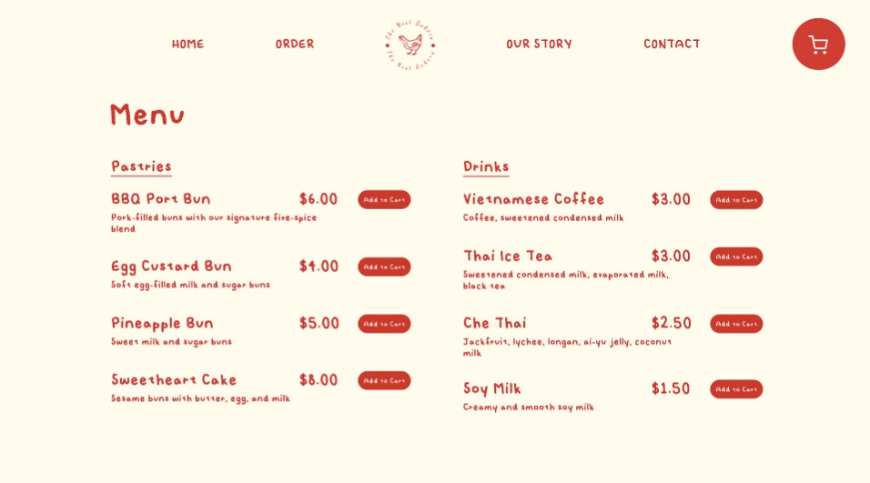
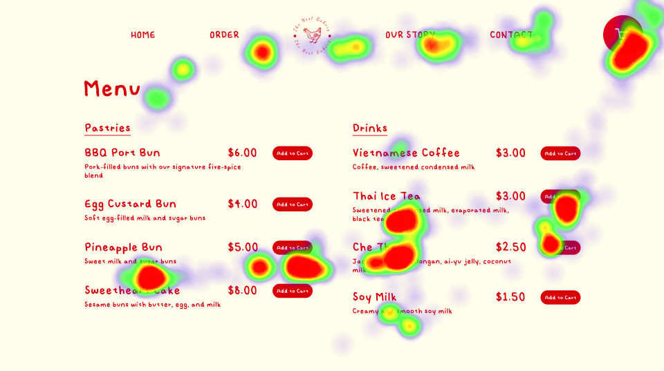
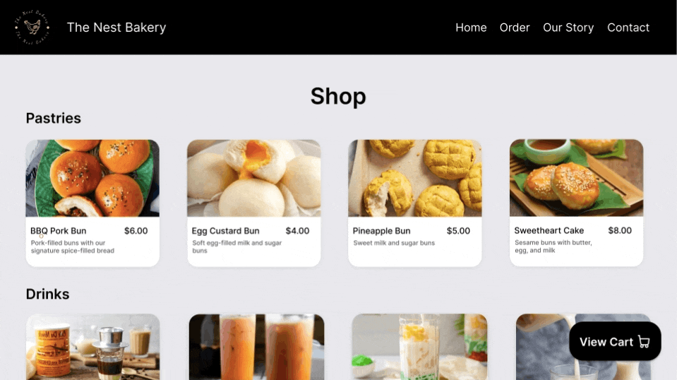
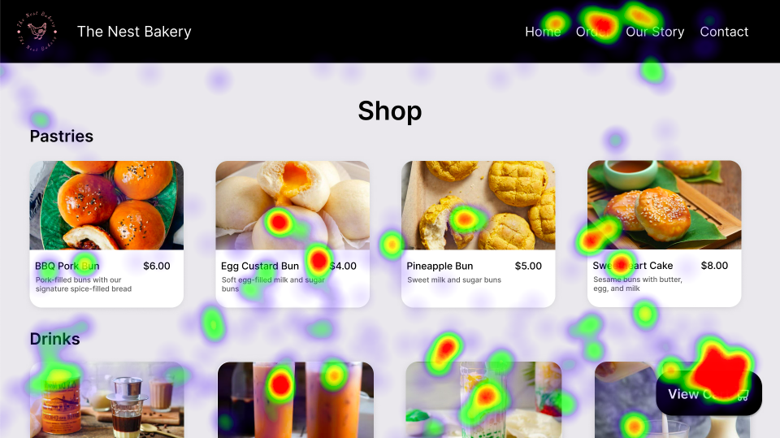

Eye tracking is a technology that detects people's eyes and follow what they are looking. It is a method used to measure where people are looking and for how long they are looking.
It converts the eye movements in to data streams, which can later be converted into heatmaps. Through this, the testers to see their designs through the user's eyes and have deep understanding of visual attention.
Heatmap Generation
To conduct out eye tracking tests, we brought two people into the lab, where the eye tracking camera is,
as test participants. These two people were not be members of your group.
Before we started the test, we gave both of our participants a task to perform when they are looking at the designs. The task was to add
one pastry and one drink to the cart and view the cart by just looking at the screen, tracing the task with their eyes, and not touching the mouse.
Each participant only tested one version. The camera collected data and tracked their eye movements when they were completing the tasks.
After conducting our tests, to analyze the eye tracking data, we generated heatmaps (a still image that depicts where our test participants' gazes were fixed)
and animated replay of their gaze motion, both overlaid on the design so that it is showing what interface elements test participants were looking at.
We used the stencil code given by the TAs to generate a heatmap and a replay for each version. The stencil file rendered an animation of the eye tracking path of the user using circles on top
of the design.
Version A
Eye Movements
This file is an animation of the eye tracking path of the user using circles. By looking at this, we can say that
the user did not have any difficulties choosing the items they wanted and adding them to the cart. From the eye movements, we can see
that the user adds 'Pineapple Bun' and 'Thai Ice Tea' to the cart and then views the cart icon. Later, the user looks through the navigation bar.

Heatmap

Version B
Eye Movements
We can examine that
the user looks at most of the items on the menu before looking at the 'View Cart' button. After adding items and viewing the cart, the user looks
at the navigation bar.

Heatmap
